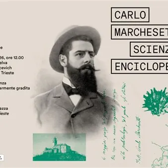

da sab 24 ott a sab 19 dic
Eventi collaterali alla mostra "Carlo Marchesetti, scienziato enciclopedico"
Durante il periodo della mostra sono previste le seguenti conferenze presso la Sala Bazlen di Palazzo Gopcevich: venerdì 6 novembre, ore 17:30 "Carlo Marchesetti paleontologo. Fossili, grotte e scoperte di un ricercatore curioso" a cura di Francesco Boschin, professore associato…
 Indicazioni
Indicazioni
- Costi e prenotazioni
- Costo non indicato · Prenotazione non indicata
- Programma
- Programma da verificare. Apri la fonte ufficiale per orari e possibili aggiornamenti.
- In caso di maltempo
- Nessuna indicazione specifica pubblicata.
- Note
- Acquisito automaticamente dalla fonte.
L’EVENTO
Descrizione completa
Durante il periodo della mostra sono previste le seguenti conferenze presso la Sala Bazlen di Palazzo Gopcevich:
venerdì 6 novembre, ore 17:30
"Carlo Marchesetti paleontologo. Fossili, grotte e scoperte di un ricercatore curioso"
a cura di Francesco Boschin, professore associato, Dipartimento di Scienze Fisiche, della Terra e dell’Ambiente, Università degli Studi di Siena;
venerdì 13 novembre, ore 17:30
"Carlo Marchesetti scienziato e archeologo"
a cura di Costanza Brancolini, conservatrice del Museo d'Antichità J.J. Winckelmann;
venerdì 27 novembre, ore 17:30
"Carlo Marchesetti e il suo tempo: l'archeologia tra ricerca e tutela a Trieste e nel Litorale austriaco (1850-1918)" a cura di Roberto Micheli, archeologo della Soprintendenza Archeologia, Belle Arti e Paesaggio FVG.
Approfondimenti sono possibili anche intervenendo ai seguenti appuntamenti organizzati nei Musei Civici nell'ambito del programma ''Conoscere Marchesetti e il suo tempo: conferenze, approfondimenti, visite alle collezioni e ai depositi dei musei civici'':
sabato 24 ottobre
"Passeggiata botanica al Museo di Storia Naturale"
Visita al gabinetto scientifico e al deposito di botanica con focus su Marchesetti
Relatore: Fulvio Tomsich Caruso, istruttore culturale e responsabile delle collezioni botaniche del Museo di Storia Naturale di Trieste
Ritrovo: ore 11:00 presso la Sala Incontri, Museo Civico di Storia Naturale, via dei Tominz 4, Trieste
Ingresso gratuito. Massimo 25 posti prenotabili da lunedì 19 al giovedì 22 ottobre all'indirizzo newsmuseiscientifici@comune.trieste.it
sabato 7 novembre
"Abitare a Trieste nell’800"
Visita guidata a Palazzo Revoltella
Relatrici: Susanna Gregorat conservatrice del Museo Revoltella e Federica Moscolin, istruttore culturale/bibliotecaria della Biblioteca d’arte “Sergio Molesi”
Ritrovo: ore 16:00 e 17:00 al Museo Revoltella, via Diaz 27, Trieste
Ingresso gratuito. Posti limitati prenotabili all'indirizzo revoltella@comune.trieste.it
sabato 14 novembre
"I segreti delle necropoli dell’Età del Ferro a 100 anni dalla morte di Marchesetti"
Visita guidata ad alcune sale del Museo d'Antichita' J.J. Winckelmann
Ritrovo: ore 11:00 al Museo Winckelmann, Piazza della Cattedrale, 1, Trieste
Ingresso gratuito.
Il Museo non è dotato di ascensore
domenica 29 novembre
"La Biblioteca si racconta: mattinata dedicata alle pubblicazioni e alla biblioteca di Marchesetti per i 180 anni dalla fondazione del Museo e i 130 anni dalla pubblicazione della suo libro “Flora di Trieste e dei suoi dintorni”
Relatori: Kaika Cau, istruttore culturale/bibliotecaria del Museo del Mare e del Museo di Storia Naturale e Fulvio Tomsich Caruso, istruttore culturale e responsabile delle collezioni botaniche del Museo di Storia Naturale di Trieste
Ingresso gratuito fino ad esaurimento posti
sabato 5 dicembre
"Museo segreto: sulle tracce del Carsosauro Marchesetti e altri tesori fossili"
Visita alla sala paleontologica e ai depositi solitamente chiusi al pubblico
Relatore: Deborah Arbulla, conservatore paleontologo al Museo Civico di Storia Naturale di Trieste
Ritrovo per la visita: ore 11:00
Laboratorio calchi: ore 10:00-13:00 al Museo di Storia Naturale, via dei Tominz 4, Trieste
sabato 19 dicembre
"Il giardino di Marchesetti al microscopio"
Laboratorio di entomologia
Relatore: Andrea Colla, entomologo del Museo Civico di Storia Naturale di Trieste
Ingresso gratuito. Massimo 15 posti prenotabili da lunedì 14 a giovedì 17 dicembre all'indrizzo newsmuseiscientifici@comune.trieste.it
La mostra e tutti gli eventi collaterali sono a ingresso gratuito
IL PROGRAMMA
Programma e orari
Appuntamenti raccolti dalle fonti elencate. Dove manca un orario, non è ancora disponibile in questa scheda.
Programma pubblicato
- Dal 2026-10-24 al 2026-12-19
INFORMAZIONI UTILI
Prima di partire
- Controllare la fonte prima di partire.
ORGANIZZAZIONE